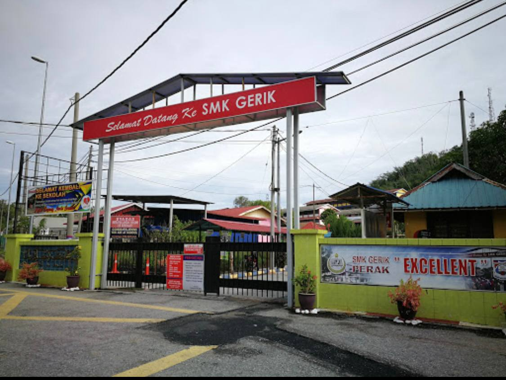
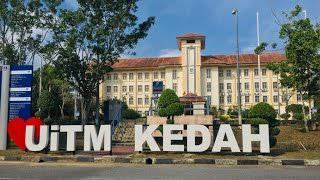

MY EDUCATION
(2017 - 2021)
I attended secondary school at Sekolah Menengah Kebangsaan Gerik, also known as SMK Gerik. The school is only 2km from my house, so it wasn’t far. In my first to third year, I was in the Computer Science stream until the PT3 exam. However, after that I decided to switch streams because my interest wasn’t in that field. I then joined the Business stream in my fourth and fifth years, during Form 4 and Form 5.
In reality, I was more interested in Science, but I stuck to the principle of “follow the flow”.I aspired to become a teacher until the end of my schooling. I achieved good results in my SPM that would have qualified me for "Institut Pendidikan Guru", but I didn’t get that opportunity. However, my luck was still intact as I was given the chance to pursue further studies in a different field, not in education. I consider that as another form of rezeki that came in a different way.
(2022-Now)
In 2022, I continued my studies at Universiti Teknologi Mara (UiTM) Kedah Branch in Information Management at the diploma level. My diploma course lasts for 2 and a half years, which is 5 semesters, and I am now in my final semester, Semester 5. God willing, I will finish my studies in 2025.Pursuing this field of study has provided me with a lot of new experiences and knowledge, especially in record management. I have learned many things, and I am very grateful for this opportunity.
|

🖈SECONDARY SCHOOL: SMK GERIK |

🖈 UNIVERSITI TEKNOLOGI MARA,KEDAH |